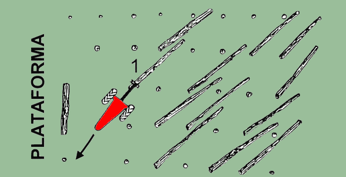
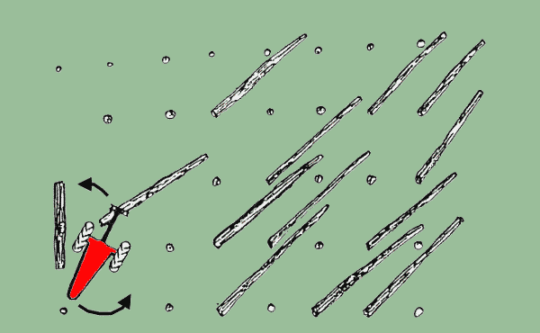
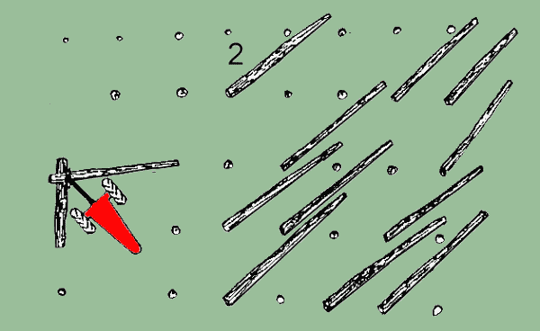
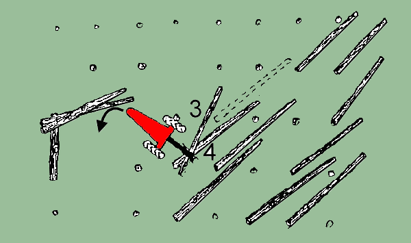
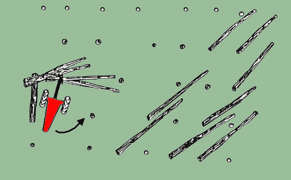
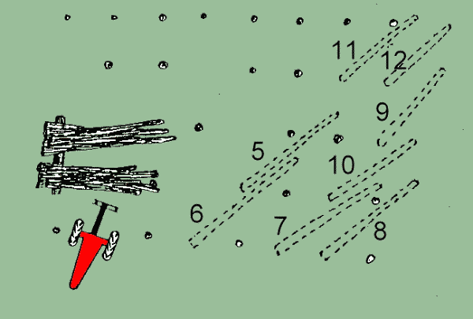

|
INFORME TÉCNICO TECFOR Nº 07 |
|
Engavillado con Trineumático TECFOR: 2ª parte
En el número
anterior señalábamos que el proceso de engavillado, el operador debía considerar la ubicación,
la plataforma y el…
Tamaño de la gavilla: Una vez que se ha preparado la plataforma, se puede iniciar el engavillado. La práctica
más común para el operador es construir dos pilas de trozas en cada lugar de engavillado. Se construyen
normalmente 2 pilas para hacer más fácil el enganchado. Cada pila deberá contener de 5 a 10
trozas, dependiendo del tamaño del árbol. Si se requiere , se pueden seleccionar las trozas en 2
pilas largas y cortas en el lugar de engavillado. El tamaño de la gavilla deberá ser de un número
manejable de troncos, tanto para el enganche como para maximizar la capacidad del skidder. Deberá ponerse
énfasis más bien en el tamaño o volumen apropiado de la gavilla que en un número fijo
de troncos. De este modo, el número de troncos por gavilla variará dependiendo de los tamaños
individuales de los árboles, por ejemplo, 8 trozas grandes es equivalente a 14 pequeñas. El volumen
por hectárea afectará el tamaño óptimo de la gavilla. Así el TECFOR deberá
limitarse al traslado de la madera en distancias cortas, de modo que en los rodales de bajo volumen, el tamaño
de la gavilla pueda tener que ser reducido para mantener la productividad de engavillado del TECFOR.
Los siguientes diagramas ilustran el procedimiento de engavillado:
El trineumático está listo para empezar a engavillar. Se ha talado una faja de 4 corridas de árboles,
La plataforma ha sido construída en una ubicación con espacio suficiente para que el equipo pueda
girar sin inconvenientes.
Paso 1:
El TECFOR,
sale y toma la troza Nº1. Luego retrocede arrastrando la troza al lugar de engavillado.

Paso 2: El TECFOR traslada la troza al sitio de engavillado y luego gira hacia éste,
haciendo girar la troza en sentido contrario.

Paso 3: El trineumático coloca la troza sobre la
plataforma. El procedimiento se repite para la troza 2.

Paso 4:
El TECFOR
va hacia la troza Nº 3 y la toma. Luego la arrastra y la coloca sobre la troza Nº 4.

Paso 5:
Se acarrean las trozas 3 y 4 y se colocan sobre la plaforma.

Paso 6:
El procedimiento se repite engavillando juntas las trozas 5/6, 7/8/10 y 9/11/12, hasta que se completa la gavilla.

3.- Extracción con skidder: Como se señaló
anteriormente, el método de engavillado más común es construir 2 pilas. Se deberá equipar
el skidder con 2 estrobos largos de 4 y 5 m de longitud para el enganche en las 2 pilas. Al estrobar, el operador
deberá colocar los estrobos lo más arriba posible de las trozas y apretar manualmente el estrobo
para evitar que se deslice. La carga se huinchea lo más alto posible para sacar las gavillas del suelo.
Para mejorar la tolerancia, algunos empresarios han levantado los rodillos del arco maderero o han levantado toda
la sección del arco maderero, insertando una caja de 30 cm de alto bajo éste. Si se construye una
sola pila de trozas en la plataforma, se puede usar entonces un solo estrobo más largo, o alternativamente
el cable principal equipado con un gancho o una abrazadera en el extremo, que pueda volver a enganchar sobre el
mismo. Lo ideal sería usar un skidder de tenazas o "grapple", en cuyo caso el engavillado y la
extracción serán más rápidas al eliminar tanto la necesidad de que el TECFOR construya una
plataforma, como también el estrobado. Puede sin embargo, que haya una reducción en la capacidad
máxima del skidder debido a la capacidad de la tenaza.
TECFOR ES TECNOLOGÍA FORESTAL